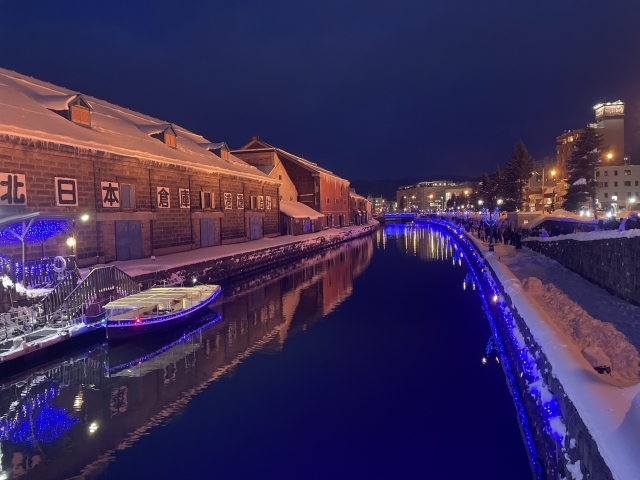
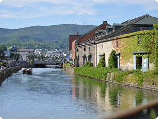
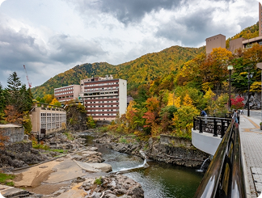
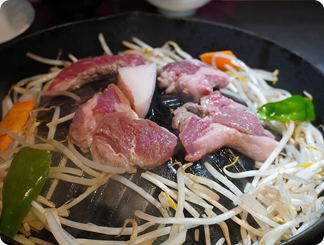
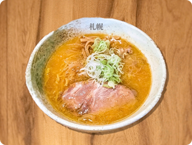

北海道
hokkaido


hokkaido
「試される大地」の別名を持つ北海道。冷涼な気候が育む四季折々の絶景（ラベンダー畑、紅葉、流氷）、漁場から直送される極上の海産物、そしてジンギスカンやラーメンなどのソウルフード。観光客を飽きさせない多様な魅力が凝縮されています。日本にいながらにして、まるで異国を旅しているかのような開放感と感動に出会える場所です。
アクセス情報
各エリア毎に、おすすめの観光スポットと食事を紹介します
Sapporo Otaru
札幌・小樽エリア は、北海道の都市魅力と歴史情緒を一度に楽しめる人気スポットです。 札幌では大通公園やグルメ、ショッピングなど都市の快適さが充実。小樽では運河沿いの石造倉庫群やガラス工芸など、レトロで落ち着いた街歩きが楽しめます。 両エリアは30分ほどで行き来でき、気軽に都会と港町の魅力を満喫できます。


札幌から電車で約40分のノスタルジックな港町・小樽のシンボル。運河沿いの石造り倉庫群は、現在はレストランやショップとして利用されており、特に夕暮れからガス灯が灯る時間帯はロマンチックな雰囲気に包まれます。

札幌市内から車で約1時間とアクセスが良い温泉地。札幌の「奥座敷」と呼ばれ、豊平川沿いの渓谷美を眺めながら入浴できる旅館が多く、日帰り入浴や宿泊でリラックスできます。

ジンギスカンは、羊肉（ラムやマトン）を独特なドーム型の鍋で豪快に焼き、専用のタレでいただく北海道の代表的な肉料理です。 澄んだ空気の中で育まれた羊肉は臭みが少なく、特製のタレと絡み合ってジューシーな旨味が口いっぱいに広がります。鍋の周りで一緒に焼く野菜にも肉の旨味が染み込み、ビールとの相性も抜群！

今や日本全国で愛される味噌ラーメンですが、その発祥はここ札幌です。豚骨や鶏ガラをベースにした熱々のスープに、独特の風味を持つ味噌を溶かし込むことで、深いコクとまろやかな味わいが生まれます。スープによく絡む太めの縮れ麺、そしてたっぷりの炒め野菜やひき肉が特徴。雪深い札幌で体を芯から温めてくれる、濃厚でパンチの効いた一杯をご堪能ください。
各主要都市からのアクセス情報を記載しています
 東京から
東京から 大阪から
大阪から 名古屋から
名古屋から 福岡から
福岡から